Differentiable physics, H2: a graph prior on the pooled convex model's parameters
At the weight we tested, tying the parameters of interconnected substations together did not
improve the forecast, and it made two kinds of parameter interval too confident. In the scored
year (2025-26) it worsened the average quantile score by 0.020 points (the interval spans zero) and
the score in winter evening peaks by 0.173 points (the replicate year, 2024-25, gave −0.021). On
synthetic substations with a known truth, the tie narrowed only heating-slope intervals, and the
80% intervals of PV (photovoltaic) capacity held the truth 17% of the time with the tie against
78% without it. A tie on heating slopes alone worsened the real-data score by 0.006 and 0.001 points
in the two years (both intervals span zero), which is an exploratory lead and not a result. The
pre-registered verdict is refuted.
We asked whether a penalty on neighbouring substations' parameters narrows their intervals without breaking coverage. The pooled convex demand model of experiment 109 predicts a Primary substation's demand from the calendar, the weather, and a PV term, and it fits each substation's own parameters: a heating slope (how much demand rises per 10 °C of cold, in each part of the day), a PV capacity, the scale of the daily profile, and a level for holidays. An 80% interval says how well two years of half-hourly readings fix a parameter, and its coverage is the share of such intervals that hold the true value. Experiment 113 found heating slopes known only to within about 38% of their size. Here a penalty pulls the parameters of interconnected substations (a pair such as D5 and D16 that are electrically connected) towards each other, with a weight set in rows of evidence per interconnection, and we required that the forecast get no worse than 0.03 points.
We tested the penalty on synthetic fleets with a known truth, and then on real data. A synthetic fleet is 15 substations built from the real calendar, weather, and PV shape of five Primary substations, with noise copied from real residuals. In the smooth cell the true parameters of interconnected substations are alike (correlation 0.8), and in the unlike cell they are drawn independently. We ran 120 fleets per cell (40 in each of three sets). The real data are the five decision substations (D5, D10, D11, D14, and D16) fitted jointly with D9 and eight substations that train on night-time readings only, on a graph of 14 substations and 21 interconnections. Each fit is frozen at 1 July and scored over the next 12 months: 2023-24 tunes the weight (10,000 rows of evidence per interconnection), 2024-25 is the replicate year, and 2025-26 is the scored year.
The penalty narrowed only the heating-slope intervals, and a randomly rewired graph narrowed them just as much. On the synthetic fleets, heating-slope intervals shrink to 0.59 of the width of fitting each substation alone but cover the truth 70% of the time (76% without the penalty), and the profile-scale and PV-capacity intervals cover it 56% and 17% of the time (75% and 78% without). On real data neighbours' heating slopes differ by a mean squared amount about half that of random pairs, yet three randomly rewired graphs (each substation keeping its number of interconnections) narrow the real intervals as much, so the narrowing is not evidence that neighbours are alike.
Terms
- Points are percentage points of a substation's effective capacity (a high percentile of its absolute power), so 1 point is about 1% of capacity. A heating slope is in points per 10 °C of cold. The quantile score is twice the mean pinball loss over 11 quantiles of the forecast, in points; smaller is better.
- Arms. G fits each substation alone. N pulls every substation towards a fleet mean with a penalty of 3,000 rows of evidence (experiment 109's choice). H pulls interconnected substations' heating slopes, profile, holiday coefficients, and PV capacity together with a penalty of 10,000 rows of evidence per interconnection; a row of evidence is one training row's worth of weight. NH has both penalties. P-hol pools only the holiday coefficients of the five decision substations to a fleet mean (10,000 rows). H-perm is H on a rewired graph.
- Contrasts are the first arm minus the second, so a negative number favours the first. R1 is H minus G, R2 is NH minus N, R3 is P-hol minus G on event days, and R3b is P-hol minus G on other days. R1w, R2w, and R3w are R1, R2, and R3 on winter rows. The plan required R1 and R2 non-inferior at +0.03 points in both years.
- Event days are the days of the holiday periods the demand model carries (each bank holiday, Easter, the bridge days, and the Christmas to New Year run), without the clock-change days. Winter is November to March. The evening peak is the half-hours that start from 16:00 to 19:30 UTC. A cold-snap day is a winter day whose mean temperature is at or below the substation's 10th percentile of winter days in the two years before the cut.
- Gate is the synthetic-fleet test. Readings (a), (b), and (c) are its pre-registered pass lines: (a) smooth-cell coverage within 5 points of G's, (b) interval widths of at most 0.85 of the reference arm's in two of three parameter families, and (c) unlike-cell coverage within 10 points of G's. The hold-back rule caps the verdict when a winter contrast's upper end is above +0.03 points in the scored year.
Figures
Figure 1 shows the graph prior worsening the score a little on average and more in winter evenings. In the scored year H minus G is +0.020 points over all days, +0.055 over November to March, and +0.173 over the winter evening peak. P-hol scores 0.099 points better on event days in the scored year and level on other days.
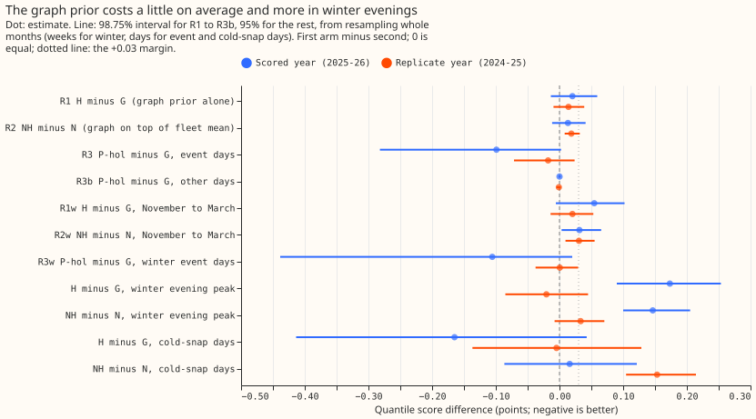
Figure 2 shows the graph prior leaving scale and capacity intervals overconfident. Over 120 smooth-cell fleets, H covers the true heating slope 70% of the time (G: 76%), the profile scale 56% (G: 75%), and the PV capacity 17% (G: 78%). The fleet mean alone (N) also under-covers heating slopes, at 59%.
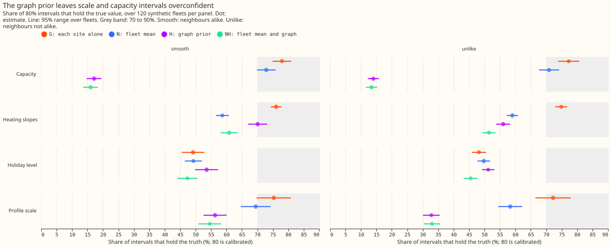
Figure 3 shows the narrowing being confined to heating slopes. H's median slope interval is 0.59 of G's width, and NH's is 0.81 of N's. Scale and capacity intervals narrow by 5 to 7% at most, and the holiday interval widens to 1.14 times G's.
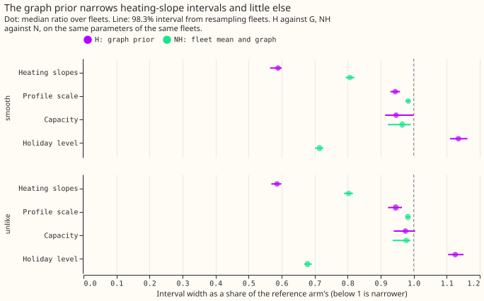
Figure 4 shows a rewired graph narrowing real slope intervals as much as the real graph does. In the scored year H is 0.89 of G's width for heating slopes and the three rewired graphs give 0.80 to 0.90; H is 1.03 times the rewired graphs' width (1.04 in the replicate year).
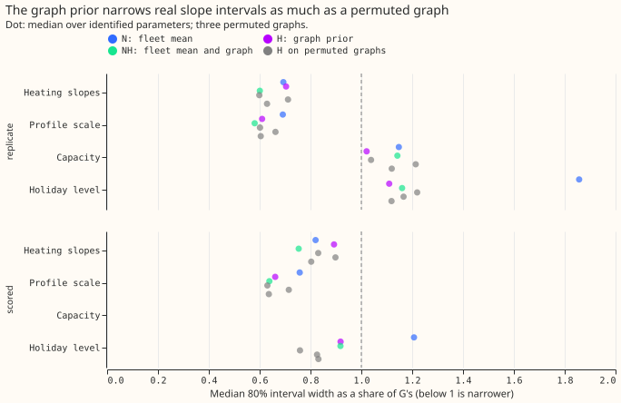
Figures 5 and 6 give every arm's absolute score. In the scored year G is ahead of N, H, and NH on all days (by 0.02 to 0.07 points), in winter, and in the winter evening peak, and P-hol is level with G. In the scored year N, H, and NH are ahead of G on cold-snap days (4.04 to 4.06 against 4.20) and on event days (2.87 to 2.93 against 3.05). In the replicate year all arms are within 0.02 points of each other on all days. Every arm scores better than climatology and the manual heuristic in every column shown, by 0.13 to 1.2 points.
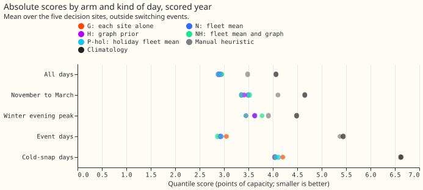
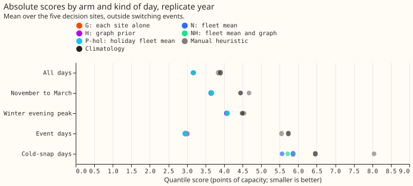
Results
- Verdict
refuted, by the pre-registered coverage rule. The controls pass and the planted failure is detected. At a weight that passed the harm bound, H's smooth-cell coverage is under 60% and more than 10 points below G's for profile scale (56.3%, G 75.3%) and PV capacity (17.1%, G 78.0%), and so is NH's (54.5% and 16.0%). These are synthetic-fleet results, so the capacity and scale findings are worded as synthetic-only. Readings (a) and (c) fail, and reading (b) fails because only heating slopes narrow to 0.85 or less (H 0.59, NH 0.81; scale 0.94 and 0.98, capacity 0.95 and 0.97). Reading (d), a bias under a quarter of the interval width, fails for capacity (1.39 for H, G 0.20) and scale (0.28, G 0.24). The hold-back rule applies too: R1w's upper end is +0.102 and R2w's is +0.065 in the scored year, both above +0.03. -
Real-data contrasts (98.75% intervals for R1 to R3b, R1w, R2w, and R3w; 95% otherwise; scored year, then replicate year). The R3 intervals resample whole days, not days within each holiday period as the plan said, because a period has one day per year.
Contrast Scored year Replicate year R1, H minus G, all days +0.020 (−0.014 to +0.059) +0.014 (−0.009 to +0.039) R2, NH minus N, all days +0.013 (−0.012 to +0.041) +0.019 (+0.008 to +0.032) R3, P-hol minus G, event days −0.099 (−0.282 to +0.002) −0.018 (−0.071 to +0.024) R3b, P-hol minus G, other days +0.000 (−0.002 to +0.002) −0.001 (−0.005 to +0.002) R1w, H minus G, winter +0.055 (−0.006 to +0.102) +0.020 (−0.014 to +0.053) R2w, NH minus N, winter +0.031 (+0.003 to +0.065) +0.031 (+0.009 to +0.055) R3w, P-hol minus G, winter event days −0.106 (−0.438 to +0.020) +0.000 (−0.038 to +0.029) H minus G, winter evening peak +0.173 (+0.090 to +0.253) −0.021 (−0.085 to +0.045) NH minus N, winter evening peak +0.147 (+0.100 to +0.205) +0.033 (−0.008 to +0.070) H minus G, cold-snap days −0.165 (−0.414 to +0.043) −0.005 (−0.137 to +0.129) NH minus N, cold-snap days +0.016 (−0.087 to +0.121) +0.153 (+0.105 to +0.214) N minus G, all days +0.058 (+0.022 to +0.102) −0.004 (−0.047 to +0.041) H minus N, all days −0.037 (−0.079 to −0.003) +0.018 (−0.013 to +0.046) Non-inferiority of R1 at +0.03 is not shown in either year, and the scored half-width of R1 (0.036) is over the 0.025 limit, so the non-inferiority question is undecidable. H is better than G at 2 of 5 substations in both years. The P-hol event-day intervals rest on 22 event days in the scored year and 21 in the replicate year, with 1 or 2 days per holiday period, so the evidence is thin, and P-hol does not meet the plan's gain rule (interval wholly below zero) in either year. The cold-snap evidence is 11 to 13 days a substation-year. N pools 14 substations here and 7 in experiment 109, whose scored-year N minus G was +0.031.
-
Absolute scores (quantile score in points; five decision substations, outside switching events and clock-change days).
Arm Scored, all days Scored, winter Scored, winter evening peak Replicate, all days G 2.883 3.36 3.45 3.166 N 2.941 3.49 3.63 3.163 H 2.903 3.41 3.62 3.180 NH 2.954 3.52 3.78 3.181 P-hol 2.879 3.35 3.45 3.165 Manual heuristic 3.484 4.10 3.91 3.843 Climatology 4.065 4.65 4.49 3.904 -
The synthetic gate (smooth cell; 120 fleets; coverage of 80% intervals).
Family G N H NH H width / G NH width / N Heating slopes 76.1% 58.7% 70.1% 60.9% 0.59 0.81 Profile scale 75.3% 69.5% 56.3% 54.5% 0.94 0.98 PV capacity 78.0% 72.9% 17.1% 16.0% 0.95 0.97 Holiday level (not gated) 49.2% 49.3% 53.6% 47.3% 1.14 0.72 In the unlike cell H covers 56.1% (slopes), 32.8% (scale), and 14.0% (capacity) against G's 74.9%, 72.2%, and 77.3%. In the wrong-graph cell (truth smooth on a different graph) H covers 69.0%, 49.8%, and 19.2% against G's 76.3%, 76.1%, and 77.7%. The planted failure (a weight of 100,000) covers 44.7% of slopes, 23.0% of scale, and 13.4% of capacity in the unlike cell, which is 30.1, 49.2, and 63.9 points below G (20.8, 15.6, and 32.1 standard errors), so the planted failure is detected. Correlated noise (not part of the verdict): 40 fleets per cell with a smooth truth and neighbour noise correlation 0.3 and 0.6. H covers heating slopes 75.3% and 70.3% against G's 76.2% and 75.4%, profile scale 53.6% and 48.0% against 81.4% and 73.0%, and capacity 18.2% and 19.5% against 77.7% and 77.5%, with slope width 0.58 of G's in both. Correlated noise does not rescue the scale or capacity intervals.
-
Why capacity fails (diagnosis on four smooth fleets, not part of the gate). The capacity term acts on the sum of a substation's capacity increments, a single number that the data fix with about 1,230 rows of information. At 10,000 rows per interconnection the weight on that sum is about 510, and a substation has 2.8 interconnections on average, so the penalty is as strong as the data and neighbouring capacities are tied almost completely. A graph penalty on capacity alone gave a mean absolute capacity error of 4.3 points against 0.85 without it and coverage of 25%; a penalty on heating slopes, the profile, or holiday coefficients alone left capacity at 80% coverage.
- Tuning (before the gate). Every weight from 0 to 30,000 scored within one standard error of the best on the synthetic interval score, so the largest weight whose real tuning-year harm stayed within +0.02 points was chosen: 10,000. The holiday weight, 10,000, is at the top of its grid, so the event-day score might fall further at a larger weight.
- The next weight up (30,000, exploratory; the plan's next grid value). In the smooth cell H covers slopes 66.0%, scale 46.5%, and capacity 16.6% (slope width 0.53 of G's). On real data H minus G is +0.048 (+0.013 to +0.086) in the scored year and +0.031 (+0.007 to +0.056) in the replicate year (95% intervals); NH minus N is +0.038 and +0.041. A larger weight narrows slopes more, lowers every coverage, and worsens the score more.
- Real parameter intervals. Neighbours' heating slopes are alike: the mean squared difference across interconnections is 0.46 to 0.57 times that of random pairs for the four times of day in the scored year (two just under the predicted 0.5) and 0.32 to 0.79 in the replicate year; for the profile scale it is 0.88 and 1.17, and for the holiday level 0.35 and 0.33. H's heating-slope width is 0.89 (scored) and 0.70 (replicate) of G's, the three rewired graphs' is 0.80 to 0.90 and 0.60 to 0.71, and H over the rewired graphs is 1.03 and 1.04, so the real graph adds nothing over the three rewired graphs tried. G's residuals correlate 0.24 and 0.29 along interconnections.
- Tails (all rows; coverage of the 0.01, 0.05, 0.95, and 0.99 quantiles). Scored year: G 0.7%, 2.7%, 84.1%, and 93.9%; H 0.7%, 2.7%, 83.9%, and 93.7%; N 0.7%, 2.8%, 83.1%, and 93.1%; NH 0.7%, 2.8%, 83.5%, and 93.1%. Replicate year: G 1.9%, 5.5%, 79.9%, and 90.5%, and the other arms are within 0.3 points. The upper tail is under-covered by 11 points at the 0.95 quantile in the scored year and 15 in the replicate year, as in experiment 109, whose shortfall the plan attributed to a spread taken from one replica year. The pinball loss at the 0.95 quantile is 0.852 for G and 0.864 for H in the scored year.
- Exploratory lead (not a result; the plan listed these arms as exploratory). A graph penalty on heating slopes alone (gamma 10,000) worsens the score by 0.006 (−0.011 to +0.026) in the scored year and 0.001 (−0.017 to +0.018) in the replicate year, and by 0.021 (−0.011 to +0.048) and 0.012 in winter (95% intervals). On the synthetic fleets it leaves scale (75.5%) and capacity (81.6%) coverage at G's level and narrows slope intervals to 0.59 of G's, but covers slopes only 68.0% of the time in the smooth cell (G 75.7%) and 55.0% in the unlike cell (G 72.9%), on the 40 fleets of set 1. A graph penalty on the holiday coefficients alone is level with G (−0.001 and +0.000).
Predictions against outcome
- R1 and R2 inside ±0.02 with a half-width of 0.02 to 0.03: the estimates held (R1 +0.020 and +0.014, just at the edge in the scored year; R2 +0.013 and +0.019), and two half-widths failed: R1 in the scored year (0.036) and R2 in the replicate year (0.012).
- R3 −0.1 to −0.5 and R3b inside ±0.01: R3 was −0.099 (just short of −0.1) and −0.018; R3b held (+0.000 and −0.001).
- Smooth-cell coverage of H and NH 72 to 88% and within 5 points of G: failed (H 70%, 56%, 17%; NH 61%, 55%, 16%). Width ratio 0.6 to 0.9 for slopes and scale, 0.8 to 1.0 for capacity: slopes were just under the range (0.59, 0.81 for NH), scale was above it (0.94, 0.98), and capacity held (0.95, 0.97). Unlike-cell coverage 65 to 80%: failed (56%, 33%, 14% for H). The planted failure covers 40 to 60%: slopes 44.7% (held), scale 23.0% and capacity 13.4% (lower).
- Real data, edge-similarity ratio 0.5 to 0.9 for slopes: 0.46 to 0.57 in the scored year (two bands just under 0.5) and 0.32 to 0.79 in the replicate year. H's width ratio against G 0.8 to 0.95 and against the rewired graphs 0.85 to 1.0: 0.89 held and 0.70 did not; 1.03 and 1.04 against the rewired graphs did not. Capacity changing by under 5% (two interconnections): not testable in the scored year, where capacity is pinned; in the replicate year H's capacity width is 1.02 and N's 1.15 of G's.
Checks
- Median forecast minus mean forecast, per substation and arm: 0.000 at every decision substation for G, N, H, NH, and P-hol, because the spread is centred on the median. This check cannot show a shifted spread here; the mean-forecast error beside each contrast is the informative check.
- Error of the mean forecast beside each contrast (scored year): R1 +0.036, R2 +0.030, R3 −0.166, R3b −0.002, R1w +0.090, R2w +0.073, and the evening peak +0.312 (H minus G). The signs agree with the quantile-score contrast except for R3b (+0.000 against −0.002) and two replicate-year contrasts: the winter evening peak (−0.021 against +0.087) and N minus G (−0.004 against +0.003).
- Audit triggers (the seven in the ml-experiment skill). Fired: 2 (the H-perm placebo matches H on real slope widths, 1.03 and 1.04 times, while the smooth cell shows a narrowing, which the placebo itself explains; the coverage, unlike-cell, scale-width, and N-minus-G predictions also failed, and only the capacity failure has a diagnosis), 3 (the signs above), 4 (dropping D11 takes R1 from +0.020 to +0.0005 and R2 from +0.013 to −0.0006, so one substation carries most of R1; dropping D10 puts R1's interval (+0.009 to +0.078) and R2's (+0.002 to +0.041) wholly above zero; dropping the D10–D11 interconnection turns R2's reading from undecided to non-inferior; no other substation, interconnection, or night-time substation changes a reading), and 5 (NH is worse than both N and H in both years, 2.954 against 2.941 and 2.903 in the scored year, and the holiday weight is at its grid's top). Not fired: 1 (the five controls pass and the planted failure is detected; the 10-fleet power check had standard errors over 4 points, which the plan reads at the pooled size, see Disclosures), 6 (R1 and R2 half-widths are 0.5 to 1.6 times experiment 109's C1 half-width of 0.022), and 7 (a negative result: no later design builds on it). No Opus audit was run: the design session ruled, through the experiment manager, that a negative result merges on the Sonnet reviews alone.
Disclosures
- Controls at the scored cut. The plumbing controls P1 to P4 (parameter comparisons between arms only) and P5 (re-scoring experiment 109's published scored-year N) ran fits at the 2025-07-01 cut before the module review, and the manager accepted them as plumbing controls. No H, NH, or P-hol score at the replicate or scored cut was computed or seen until the real-data stage, which ran after tuning and beside the gate with the manager's approval. P5 reproduces experiment 109's N score exactly (2.929030 against 2.929030 on 104,033 rows), using 109's pool of seven series.
- Code under test. The module is
studies.dp_gam_graph(pull request 1411, merge commitdbbfd2e84). The tuning set, the 10-fleet power check, and the real-data fits of G, N, H, NH, P-hol, the next-gamma arms, and the rewired graphs ran on its CPU path at commit67deaa053. The main gate, the correlated-noise cells, the heating-only and holiday-only real fits, and the tail passes ran at commitc008d9f4bor the merge commit, which add a GPU path and tests; the CPU and GPU solves agree to 4e-10, and the Cholesky solver equals the LU solver to 1e-7 on a 15-node fleet (a module test). One arm of a 15-node fleet (41 fits) took 12 seconds on the GPU and about 118 seconds on 6 CPU threads at a machine load of 27. - Deviations from the plan. The winter evening-peak and cold-snap contrasts use 95% intervals, and the stored predictions hold one seed because a frozen fit has no random element (the plan said three seeds). Clarifications made before any fit, after seeing the module or the power check, are in the branch's planning commits: a relative identification rule for profile and holiday columns, centring over the coordinates both ends identify, the per-edge meaning of the weight, dark rows as CAMS irradiance below 1 W/m², the node set of N, NH, and P-hol, the winter breakdown, and the reading of the power-check sizing rule at the pooled size.
- Compute. Each of the 41 fits of an arm on a 15-node fleet took about 3 seconds on 6 CPU threads, so the gate would have taken about 33 hours on the CPU; a warm-started Cholesky solver and a GPU path took it to about 9 hours.
- Not done. No onboarding or short-history arm and no 0.97 power-factor sensitivity. The clock-change days are excluded from every score, and the fits train on them as before.
Substation cards (provisional)
Provisional: fitted to past weather on a screening run. Heating slopes are known to about 38% of their size at real noise (experiment 113); read them as weakly identified. The panels show each decision substation's parameters with 80% month-block intervals for G, N, H, and NH, and example weeks of G and NH. PV capacity is pinned to the real-time vintage at these substations, so the graph prior's capacity term does not act on them and no capacity is printed. The four example weeks start on 21 July 2025 (summer), 13 October 2025 (autumn), 19 January 2026 (winter), and 13 April 2026 (spring). They were fixed before any score: a week with a bank holiday or a hand-filtered event at any decision substation moves to the next Monday, which moved summer from 14 July and winter from 12 January.
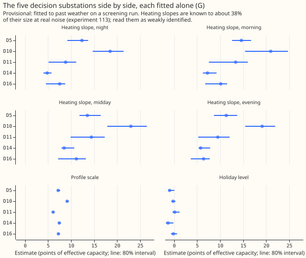
D5.
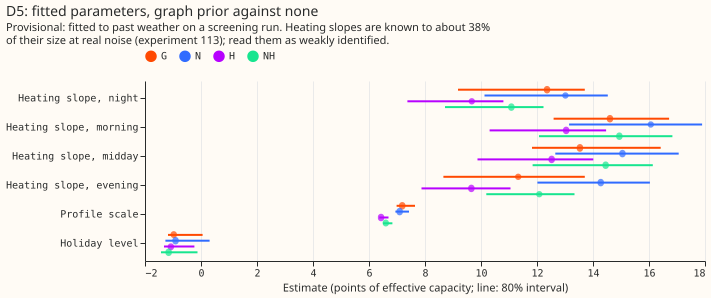
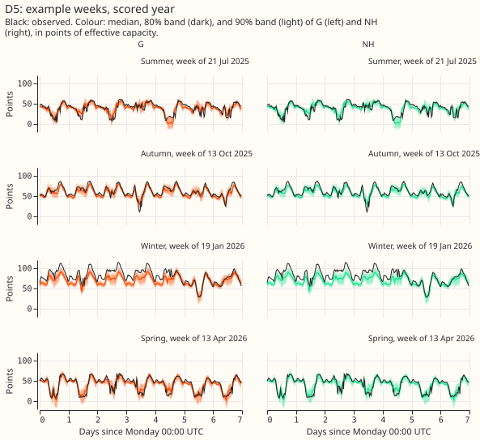
D10.
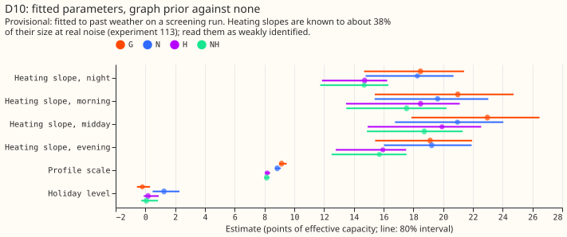
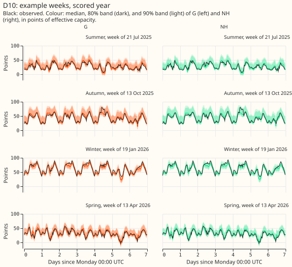
D11.
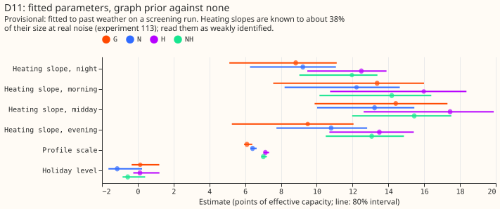
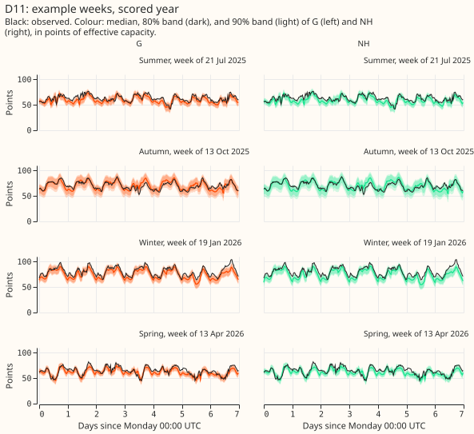
D14.
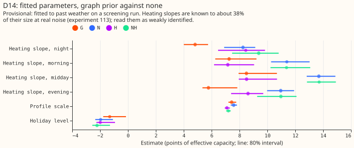
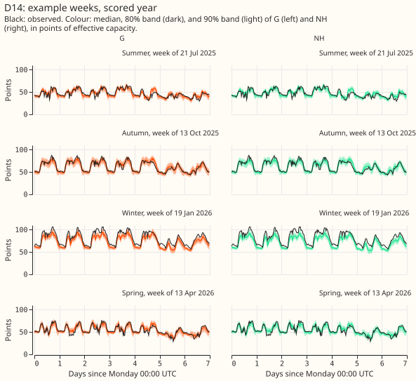
D16.
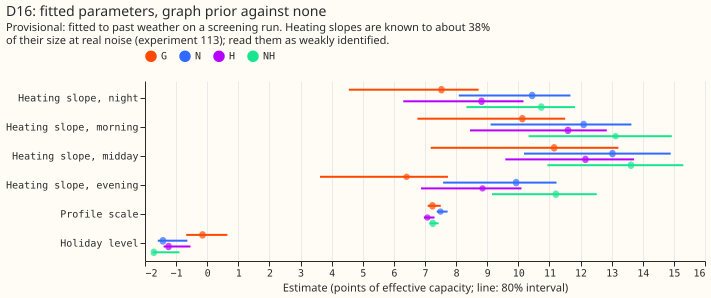
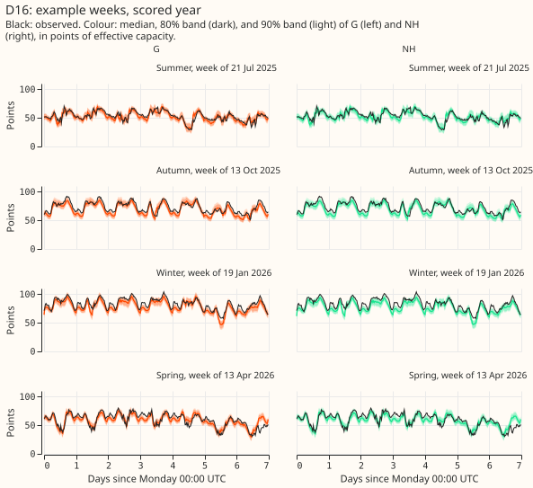
How each arm does in a cold snap
Scored year; the days are cold-snap days outside hand-filtered events. Quantile score in points and the share of observed values inside the 80% interval:
| Substation | Days | G | N | H | NH |
|---|---|---|---|---|---|
| D5 | 3 | too few days | too few days | too few days | too few days |
| D10 | 13 | 5.02 (54%) | 5.14 (52%) | 5.11 (56%) | 5.44 (53%) |
| D11 | 13 | 4.16 (51%) | 3.90 (51%) | 3.79 (54%) | 3.76 (52%) |
| D14 | 11 | 3.36 (48%) | 2.96 (52%) | 2.98 (55%) | 2.80 (58%) |
| D16 | 4 | too few days | too few days | too few days | too few days |
The 80% intervals cover only about half of the values on cold-snap days in every arm. The scored comparison covers two winters, 2024-25 and 2025-26; the 2023-24 winter tuned the weights.
Open questions
- Does a graph penalty on heating slopes alone, with a weight tuned for coverage and not for forecast skill, keep slope intervals calibrated? The heating-only arm worsened the real score by 0.006 and 0.001 points and spared scale and capacity, but still covered slopes only 68% of the time. Weights of 300 to 3,000 rows are untested for it.
- A penalty on a single number such as PV capacity has to be scaled by the information that the data hold about that number. Here the capacity sum carries about 1,230 rows of information, and the per-interconnection weight of 510 rows at a setting of 10,000 is not small beside it.
- The hierarchy work does not need a parameter graph. The real graph adds nothing over the three rewired graphs tried, and the penalty worsens the scored year's winter evening peak. A forecast-level hierarchy (a bulk supply point informed by its Primaries) is untouched by this result.